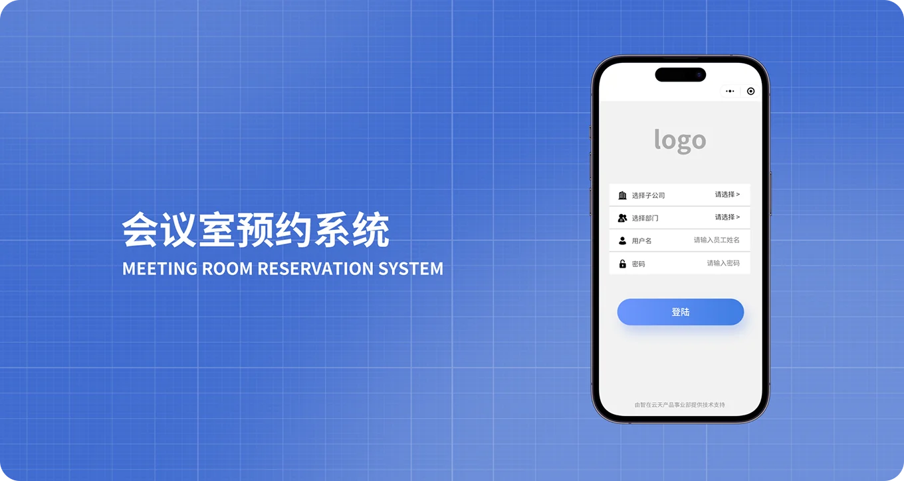
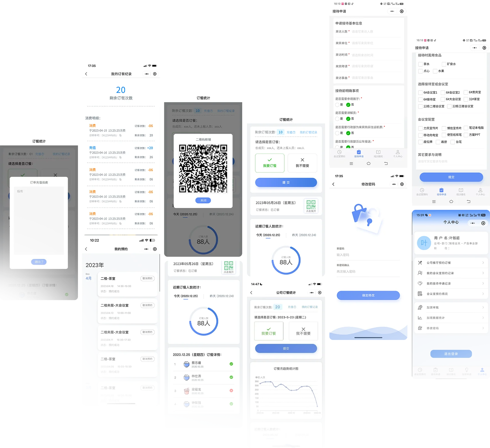

会议室预约
预约系统移动端产品

小程序简介
随着现代企业节奏加快，企业办公更需要高效率的办公系统，会议室预约已成为日常工作的重要环节。移动端预约系统帮助用户快速完成会议室查询、预约与管理，减少沟通成本。
小程序 UI 概览

预约系统移动端产品

随着现代企业节奏加快，企业办公更需要高效率的办公系统，会议室预约已成为日常工作的重要环节。移动端预约系统帮助用户快速完成会议室查询、预约与管理，减少沟通成本。
